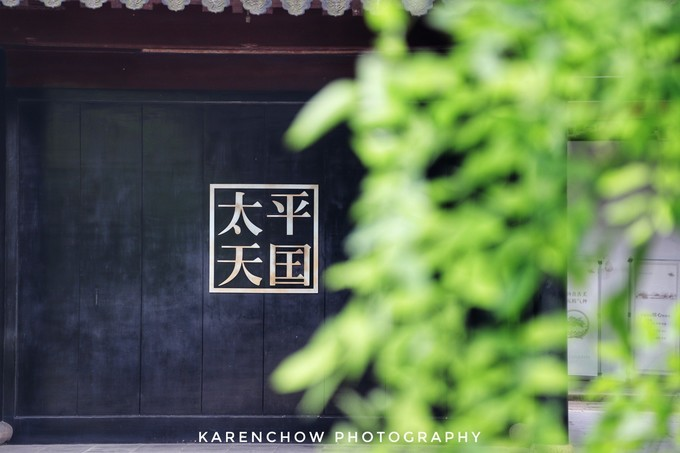
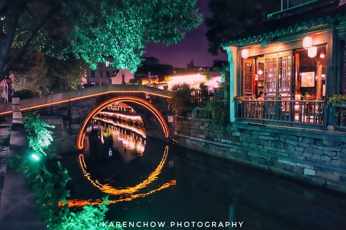
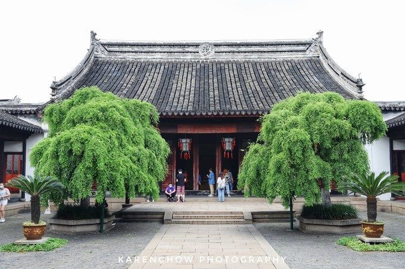
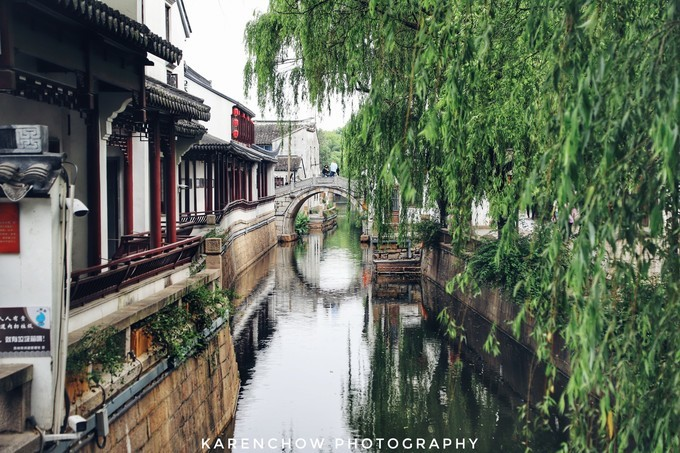
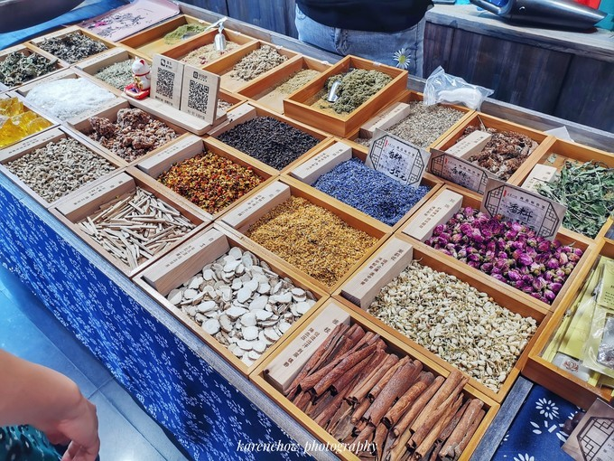
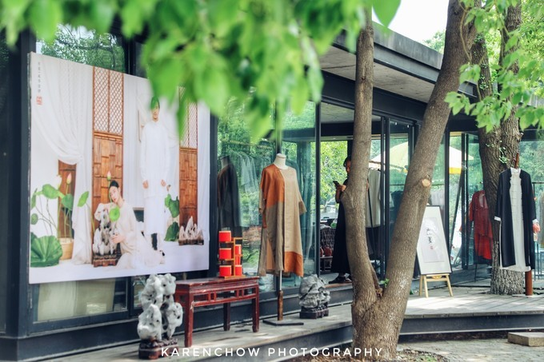

  
Welcome to Suzhou!
苏州市
一 苏州，是国家历史文化名城和风景旅游城市，国家高新技术产业基地，长江三角洲重要的中心城市之一。位于江苏省东南部，长江三角洲中部，是江苏长江经济带重要组成部分。东临上海，南接嘉兴，西抱太湖，北依长江。
地理环境
二 苏州位于江苏省南部，东临上海，南接浙江，西抱太湖，北依长江。苏州市区中心地理坐标为北纬31°19’，东经120°37’。苏州属于亚热带季风海洋性气候，四季分明，气候温和，雨量充沛。
自然资源
三 苏州水网密布，土地肥沃，主要种植水稻、麦子、油菜，出产棉花、蚕桑、林果，特产有碧螺春茶叶、长江刀鱼、太湖三白（白鱼、银鱼和白虾）、阳澄湖大闸蟹等。
风景名胜
四苏州素来以山水秀丽、园林典雅而闻名天下，有“江南园林甲天下，苏州园林甲江南”的美称，又因其小桥流水人家的水乡古城特色，有“东方水都”之称。

苏州园林
看古代大户人家的小桥流水，亭台楼阁，那是一个时代的见证

七里山塘
东连“红尘中一、二等富贵风流之地”阊门，西接“吴中第一名胜”虎丘，长约七里。

本色美术馆
东西桥旁，美术馆倚靠河流而建，这个铺子就在河边，几净窗明，服饰大多是麻制品，从服饰设计到环境都特别舒服，禅意十足。